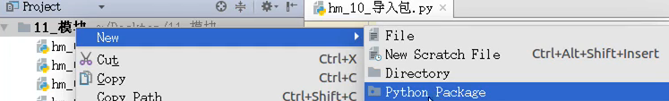

Python基础学习笔记（五）
模块的概念：模块是python程序架构的一个核心概念
模块的API：
客户端使用模块提供的函数时，无须了解其实现细节。模块和客户端之间遵循的契约（API）
通过内置函数help(),可以查看Python模块的API。其语法格式为：
import 模块名
help（模块名）
模块的类型：
模块的导入：
1.import导入
import 模块1
import 模块2
import 模块1,2 #不推荐使用，推荐分行导入
如果模块的名字太长，可以使用as指定模块的名称，以方便在代码中的使用
import 模块名1 as 模块别名（符合大驼峰命名法）
2.from...import导入
如果希望从某个模块中，导入部分工具，就可以使用from...import,,,方式
import模块名是一次性把模块中所有工具全部导入，并且通过模块名/别名访问
#从模块导入某个工具
from 模块名1 import 工具名
导入以后不通过模块，而通过工具名（全局变量，函数，类）
注意事项：
模块的搜索顺序：
1.搜索当前目录指定模块名的文件，如果有就直接导入
2.如果没有，在搜索系统目录
代码原则：每一个文件都应该是可以被导入的
1.一个独立的python文件就是一个模块
2.在导入文件时，文件中所有没有任何缩进的代码都会被执行一遍
__name__属性：
__name__属性可以做到，测试模块的代码只在测试情况下被运行，而在被导入时不会被执行
__name__是Python的一个内置属性，记录着一个字符串
如果是被其他文件导入__name__就是模块名
如果是当前执行的程序__name__是__main__
#为了使写的python文件都可以当成模块且测试代码不被执行
#则测试代码应该如下：
if __name__ = "__main__":
#测试代码
包：
概念:
好处：import 包名 可以一次性导入包和所有的模块
包的创建：

__init__.py
要在外界使用包中的模块，需要在__init__.py中指定外界提供的模块列表
例如：
#__init__文件里
from . import 需要被其他文件导入的模块1
from . import 需要被其他文件导入的模块2
模块知识持续更新......